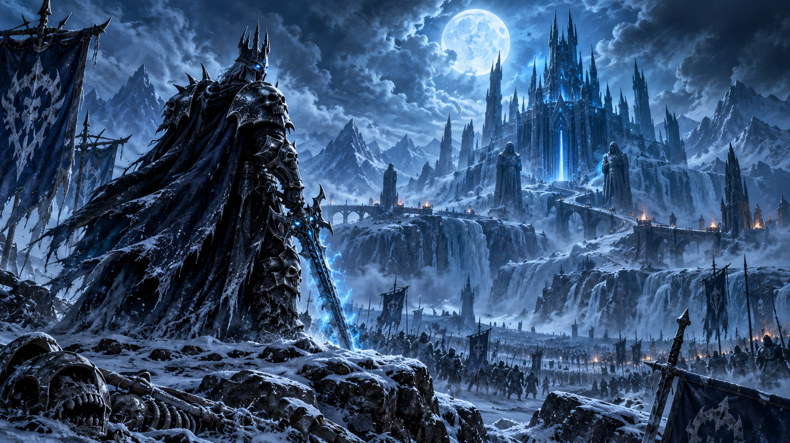

Le build du 24 septembre constitue la première grosse passe d’équilibrage de la bêta de World of Warcraft: Forever. Les neuf classes jouables sont concernées, avec des changements qui vont de simples corrections de fonctionnement à des ajustements de dégâts, de talents et de temps de recharge.
Cette mise à jour ajoute aussi deux systèmes attendus : le Gestionnaire de cooldowns et de nouveaux menus pour le jeu à la manette. Plusieurs éléments de confort et de fonctionnement sont également revus, notamment la respécialisation, les baguettes, les huiles de sorcier, les campements et certains raciaux.

Sommaire du patch
Cliquez sur une classe ou une section pour accéder directement aux changements qui vous intéressent.
Guerrier
Le Guerrier reçoit surtout des ajustements de menace, de génération de dégâts et de progression dans l’arbre Protection.
Ce qui augmente
- ▲ Fracasser armure : les valeurs de menace sont corrigées à tous les rangs et bénéficient d’une légère hausse liée à la puissance d’attaque.
- ▲ Exaltation sanguinaire : la probabilité de déclenchement passe à 4/8/12/16/20 %, contre 2/4/6/8/10 %.
- ▲ Heurtoir amélioré : le talent réduit désormais le temps de recharge de Heurtoir de 1,5 ou 3 secondes.
Ce qui diminue ou change
- ▼ Exaltation sanguinaire : le déclenchement est désormais limité aux attaques de mêlée en main principale, tout en incluant Enchaînement et Frappe héroïque.
- ▼ Heurtoir : son temps de recharge de base passe de 15 à 18 secondes.
- ◆ Protection : Bastion et Rage concentrée échangent leur place dans l’arbre. L’objectif est de rendre la progression avant Choc de bouclier plus fluide.
Paladin
Le Paladin est l’une des classes les plus modifiées de ce build. Frappe sacrée est renforcée et plusieurs éléments de l’arbre sont réorganisés, tandis que Vindicte perd une partie de ses bonus.
Améliorations
- ▲ Aura de vindicte : ses valeurs s’adaptent désormais dynamiquement à la puissance des sorts du Paladin.
- ▲ Frappe sacrée : les dégâts par rang passent à 25/29/32/36/39/43/46/50 %, contre 25/25/30/30/35/35/40/40 % auparavant.
- ▲ Sainteté : réduit désormais le temps de recharge de Frappe sacrée à 10 secondes, contre 12.
- ▲ Frappe sacrée améliorée : retirée de l’arbre et intégrée directement à Frappe sacrée, libérant ainsi un point de talent.
- ▲ Puissance sacrée : ajoute désormais 15 % de chance de coup critique à Frappe sacrée.
- ▲ Sentence sacrée : son bonus aux dégâts de Frappe sacrée passe de 10 à 20 %.
- ▲ Effet de lumière : réduit également de 20 % le coût en mana des sorts de Sceau.
Réductions et corrections
- ▼ Fureur vertueuse : le bonus de menace sacrée passe de 90 à 60 %.
- ▼ Vengeance : le nombre maximum de cumuls passe de 5 à 3.
- ▼ Spécialisation en arme à deux mains : le bonus de dégâts passe à 2/4/6 %, contre 3/6/9 %.
- ◆ Vengeance : le déclenchement est désormais lié aux coups critiques non périodiques.
- ◆ Consécration : plusieurs bugs d’application des dégâts et de position verticale sont corrigés.
- ◆ Éclair lumineux : correction de l’animation de lancement qui pouvait s’arrêter trop tôt.
Chasseur
Le Chasseur reçoit plusieurs corrections de fonctionnement, avec un nerf important pour le bonus de Hurlement furieux des familiers.
- ▲ Explosion sonique : correctement disponible pour les familiers Chauve-souris.
- ▲ Loup solitaire : quitter le talent ne conserve plus à tort une pénalité de 4 % de dégâts lorsque le familier est actif.
- ▲ Frappes lacérantes : peut désormais infliger des coups critiques.
- ▲ Coup de trotteur : ajoute désormais 30 % de vitesse de déplacement pendant 3 secondes.
- ▼ Hurlement furieux : le bonus de puissance d’attaque du familier est réduit de 40 %.
- ▼ Apprivoise une bête : ne peut plus être utilisé sur une bête d’un niveau supérieur à celui du Chasseur.
Voleur
Un seul changement, mais il concerne directement le JcJ.
- ▼ Assommer : utiliser Sap sur une cible déjà marquée JcJ marque désormais correctement le Voleur comme JcJ.
Prêtre
Le Prêtre reçoit plusieurs corrections qui améliorent surtout la fiabilité de ses soins et de certains sorts raciaux.
- ▲ Rénovation : peut désormais infliger des coups critiques.
- ▲ Mot de pouvoir : Bouclier : peut être réappliqué sur une cible qui possède déjà le bouclier si celle-ci n’est pas sous l’effet d’Âme affaiblie.
- ▲ Gnome – Plan d’urgence : peut désormais infliger des coups critiques.
- ▲ Elfe de la nuit – Éclats stellaires : bénéficie correctement de la résistance au recul accordée par Concentration crépusculaire.
- ▲ Réprouvé – Sombre sacrifice : ne retire plus certains immobilisations qui ne devraient pas être interrompues par des dégâts.
- ◆ Éclair déconcertant : reçoit un nouveau visuel et des effets sonores associés.
Chaman
Les dégâts directs et certains soins progressent, mais les cumuls de plusieurs totems sont davantage encadrés.
Améliorations
- ▲ Éclair : les rangs 3 et 4 sont augmentés pour conserver une progression cohérente malgré les changements de temps de lancement.
- ▲ Explosion de lave : les rangs 1 et 2 sont augmentés afin de rester environ 10 % au-dessus du rang d’Éclair appris au même niveau.
- ▲ Remous : peut désormais infliger des coups critiques.
- ◆ Totem Langue de feu : n’a plus de durée et est immédiatement remplacé par un nouveau Totem Langue de feu.
Limitation des cumuls
- ▼ Totem Langue de feu : ne peut plus s’empiler avec Arme Langue de feu ou Totem Furie-des-vents.
- ▼ Totem de l’air tranquille, Totem Furie-des-vents et Totem de Grâce aérienne : ne se cumulent plus entre eux, même lorsqu’ils proviennent de plusieurs Chamans du même groupe.
- ▼ Rage du Farseer rang 7 : ne fournit plus de vitesse d’incantation.
- ◆ Interface : les buffs des totems apparaissent désormais sous leur propre nom.
- ◆ Élémentaire : Furie élémentaire et Célérité élémentaire échangent leur position dans l’arbre.
Mage
Le Mage gagne surtout en confort d’utilisation et en durée de certains effets, avec une correction de Combustion.
- ▲ Projectiles des arcanes : la ligne de vue n’est vérifiée qu’au début du canal. Sortir de la ligne de vue pendant le canal n’interrompt donc plus le sort.
- ▲ Feu – Sillage de feu : durée du buff portée de 20 à 30 secondes.
- ▲ Feu – Bonne série : durée du buff portée de 15 à 20 secondes.
- ▼ Feu – Combustion : ne cumule plus deux fois certains modificateurs de dégâts en pourcentage.
Démoniste
Peu de changements, mais un correctif important pour le scaling de Sacrifice du Fléau-vide.
- ▲ Sacrifice du Fléau-vide : le soin évolue désormais correctement avec 10 % de la puissance des soins du Démoniste.
- ◆ Connexion : l’infobulle indique désormais correctement la quantité de vie convertie et son évolution avec l’Esprit.
Druide
La mise à jour améliore plusieurs soins, augmente fortement Colère et poursuit la clarification de la branche Féral.
- ▲ Récupération : peut désormais infliger des coups critiques.
- ▲ Tranquillité : peut désormais infliger des coups critiques.
- ▲ Croissance sauvage : peut désormais infliger des coups critiques.
- ▲ Colère : dégâts de base augmentés d’environ 50 %.
- ▼ Charge farouche en forme de Chat : correction d’un bug qui permettait de cibler des alliés.
- ▼ Épines : ses valeurs se recalculent désormais en continu selon la puissance des sorts actuelle du lanceur, empêchant l’ancien changement d’équipement de conserver une valeur artificiellement élevée.
- ◆ Féral – Mutilation : renommée Morsure primitive. Son ancien affaiblissement distinctif est retiré et les talents associés sont mis à jour.
- ◆ Fureur primitive : reprend le nom et l’icône Frénésie sanguinaire.
Changements généraux
Gestionnaire de cooldowns
Le nouveau Gestionnaire de cooldowns permet d’afficher certaines informations importantes dans une zone personnalisable de l’interface. Le système est désactivé par défaut et se trouve dans les options d’amélioration du gameplay.
Pour ce build, il est testable avec le Druide, le Mage, le Prêtre, le Guerrier et le Démoniste. D’autres classes doivent être ajoutées par la suite.
Respécialisation
Le coût pour changer de talents est temporairement fixé à 1 pièce d’argent lorsqu’aucun changement récent n’a été effectué. Après une respécialisation, le coût suivant augmente puis revient à 1 pièce d’argent après une heure. Cette règle est spécifique à la bêta.
Baguettes et huiles de sorcier
- ▼ Baguettes : elles ne bénéficient plus d’un bonus de dégâts provenant de la puissance des sorts de leur utilisateur.
- ◆ Huile de sorcier mineure : retour à 8 points de puissance des sorts.
- ◆ Huile de sorcier inférieure : retour à 16 points de puissance des sorts.
- ◆ Huile de sorcier : retour à 24 points de puissance des sorts.
- ◆ Huile de sorcier brillante : reste inchangée.
Raciaux
- ▼ Taurène – Culture : un niveau minimum du personnage est désormais requis pour certaines plantes, calculé à partir du niveau nécessaire pour les récolter.
- ▼ Réprouvé – Contact de la tombe : ne casse plus certains immobilisations et ne se déclenche plus sur les capacités sans dégâts, comme Distraction ou Vol à la tire.
- ◆ Gnome – Eureka : devient une réduction de 10 % du coût en Mana, Rage ou Énergie des capacités, pour toutes les classes.
- ◆ Humain – Volonté de survivre : son visuel est corrigé.
Manette et confort de jeu
De nouveaux menus déroulants apparaissent sur la barre d’action utilisée avec une manette :
- Druide : changement de forme.
- Chasseur et Démoniste : contrôle du familier et de ses capacités.
- Paladin : changement d’Aura.
- Guerrier : changement de Posture.
Le build corrige aussi plusieurs problèmes d’animations de lancement, de plaques de nom, de textures de ressources et de performances. Une fuite mémoire qui pouvait provoquer une dégradation progressive des performances est notamment corrigée.
Campements
Le buff de Feu de camp peut désormais être obtenu dans davantage de situations : assis, sur une chaise, endormi, allongé ou avec l’emote « s’agenouiller ». Il est également possible de se soigner, lancer des sorts ou fabriquer des objets sans interrompre l’attente du buff.
↑ Retour au sommaireQuêtes, zones et autres corrections
Le build contient aussi une longue série de corrections de quêtes et de zones. Plusieurs problèmes de temps de réapparition sont ajustés notamment à Elwynn, Durotar, Dun Morogh et Mulgore. Des problèmes de butin partagé sont corrigés et la quête « Capturer le vent » sur l’île de Zéphras est retravaillée.
Le courrier en jeu ne devrait plus ignorer certains noms de famille des destinataires. Plusieurs problèmes visuels et d’animations sont également corrigés.
À retenir
Cette mise à jour est avant tout une première grande photographie de l’équilibrage pendant la bêta. Les valeurs peuvent encore changer avant la sortie officielle. Les changements ci-dessus correspondent au build du 24 septembre 2026 et ne doivent donc pas être considérés comme définitifs.
Sources : notes de développement WoW Forever du 24 septembre 2026 et synthèse détaillée de Kami Labs. Kami Labs · WoWHead / notes de développement
← Retour aux actualités